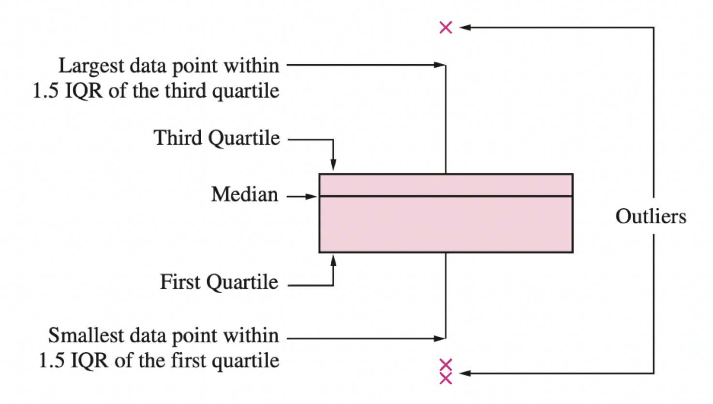

Sesión 4:
Datos Numéricos
Introducción
TBD
Estadísticos Descriptivos
Resúmenes estadísticos
Una muestra suele ser una larga lista de números. Para ayudar a resaltar las características importantes de una muestra, calculamos estadísticas resumidas. Para datos numéricos, las estadísticas resumidas más populares son:
Muestra promedio.
Variación de la muestra.
Desviación estándar muestral.
Promedio
La media muestral da una indicación del centro de los datos.
Para calcularla, considera \(n\) observaciones denotadas usando \(y_1, y_2, \ldots, y_n\) .
El promedio es igual a:
\[\bar{y} = \frac{1}{n}\sum_{i=1}^{n} y_i\]
Varianza
La varianza muestral es como un promedio de las diferencias al cuadrado entre cada observación y la media muestral.
Da una indicación de cuán dispersos están los datos.
Considera \(n\) observaciones denotadas usando \(y_1, y_2, \ldots, y_n\) . La varianza es igual a:
\[ s^2 = \frac{1}{n-1} \sum_{i=1}^{n} (y_i - \bar{y})^2 \]
Desviación Estándar
Desafortunadamente, la varianza muestral no está en la misma escala que las observaciones, ya que las diferencias entre cada observación y la media muestral se elevan al cuadrado.
Para obtener una medida de dispersión cuyas unidades sean las mismas que las de la muestra, simplemente tomamos la raíz cuadrada de la varianza muestral.
\[ s = \left(\frac{1}{n-1} \sum_{i=1}^{n} (y_i - \bar{y})^2 \right)^{1/2} \]
Esta cantidad se conoce como desviación estándar muestral.
Otros estadísticos: Cuartiles
La mediana de la muestra es el número medio de los valores de datos ordenados. Los cuartiles de muestra dividen los datos lo más cerca posible en cuartos:
El primer cuartil (\(Q_1\)) es la mediana de la mitad inferior de los datos.
El segundo cuartil (\(Q_2\)) es la mediana de los datos.
El tercer cuartil (\(Q_3\)) es la mediana de la mitad superior de los datos.
Percentiles
El p-ésimo percentil de una muestra divide la muestra tal que el \(p\)% de los valores de la muestra sean menores que el p-ésimo percentil, y (\(100 - p\))% sean mayor que este.
Para encontrar el percentil de muestra p-ésimo, haz lo siguiente:
Ordena los \(n\) valores muestrales de menor a mayor.
Calcula la cantidad \(\left( \frac{p}{100}\right) \left(n+1 \right)\).
Si esta cantidad es un número entero, el valor de la muestra en esta posición es el percentil \(p\). De lo contrario, promedia los dos valores de muestra en cada lado.

El percentil 0 es el mínimo y el percentil 100 es el máximo.
Gráficas para datos numéricos
Objetivo
Tu objetivo es visualizar la distribución de los datos utilizando una gráfica.
Una gráfica te ayuda a descrubrir patrones en los datos. Son mucho mas efectivas que una examinación de los números.
Te ayudan a contestar la pregunta:
¿Cómo se distribuyen los valores de la variable X?
¿Existen observaciones inusiales en la variable X?
Dos tipos comunes de graficas para visualizar la distribución son:
histogramas
Curvas de densidad
Gráficas de cajas.
Histogramas
Visualización gráfica que da una idea de la “forma” de la muestra, indicando regiones donde los puntos de muestra están concentrados y regiones donde son escasos.
Las barras del histograma se tocan entre sí. Un espacio indica que no hay observaciones en ese intervalo.
Ejemplo
Considere las emisiones de partículas (PM) de 62 vehículos conducidos a gran altitud.
Tabla de Frecuencia
Densidad = Frecuencia relativa/Intervalo de clase de ancho.
¿Cómo defino los intervalos?
For histograms, the width of the bins or, for equal-width bins, the number of bins affects the look of the histogram. The left histogram of longevity shown here has a few wide bins, and the right histogram has many narrow bins:
EJEMPLO
In both histograms, it’s hard to see the shape of the distribution. With a few wide bins (the plot on the left), we have over-smoothed the distribution, which makes it impossible to discern modes and tails. On the other hand, too many bins (the plot on the right) gives a plot that’s little better than a rug plot.
Most histogram and KDE software automatically choose the bin width for the histogram and the bandwidth for the kernel. However, these parameters often need a bit of fiddling to create the most useful plot. When you create visualizations that rely on tuning parameters, it’s important to try a few different values before settling on one.
No es lo mismo que una gráfica de barras
With qualitative data, the bar plot serves a similar role to the histogram. The bar plot gives a visual presentation of the “popularity” or frequency of different groups. However, we cannot interpret the shape of the bar plot in the same way as a histogram.
Tails and symmetry do not make sense in this setting.
Also, the frequency of a category is represented by the height of the bar, and the width carries no information.
Curva de densidad
Densidad es …
La curva se obtiene utilizando un método llamado Kernel Density Estimation.
¿Qué buscar en un histograma o curva de densidad?
When interpreting a histogram or density curve, we examine the symmetry and skewness of the distribution; the number, location, and size of high-frequency regions (modes); the length of tails (often in comparison to a bell-shaped curve); gaps where no values are observed; and unusually large or anomalous values.

Gáfica de Cajas
Un diagrama de caja es un gráfico que presenta la mediana, el primer y tercer cuartil y cualquier “valor atípico” presente en la muestra.
El rango intercuartil (IQR) es la diferencia entre el tercer cuartil y el primer cuartil (\(Q_3 - Q_1\)). Esta es la distancia necesaria para abarcar la mitad media de los datos.
Anatomía de una Gráfica de Cajas
Te invito a conocer más en esa liga https://towardsdatascience.com/why-1-5-in-iqr-method-of-outlier-detection-5d07fdc82097
Valores atípicos o outliers
Los valores atípicos son puntos que son mucho más grandes o más pequeños que el resto de los puntos de muestra.
Ellos pueden ser errores de entrada de datos o pueden ser puntos que realmente son diferentes al resto.
Los valores atípicos no deben eliminarse descuidadamente sin una razón válida.
En presencia de valores atípicos, la mediana es una mejor medida de centralidad que la media.
La mediana es muy relevante cuando se estudian ingresos y salarios, por ejemplo.
Te invito a conocer más sobre el uso de la mediana en esta liga: https://blog.datawrapper.de/weekly-chart-income/
Violin plots
The violin plot aims to bridge the gap between the density curve and box plot.
violin plots sketch density curves along an axis. The curve is flipped to create a symmetric “violin” shape.
[Violin plot]
Violin plots versus box plots
Box plots cannot reveal as much shape as a histogram or density curve. They primarily show symmetry and skew, long/short tails, and unusually large/small values (also known as outliers).
Violin plots do not show outliers.
Actividad
Applicando el Principio 3
Histograma de precios.
While this plot accurately displays the data, most of the visible bins are crammed into the left side of the plot. This makes it hard to understand the distribution of prices.
Ajustando la escala
Para mejorar la gráfica, puedes ajustar los limites del eje, los tick mars y aplicar transformaciones a la variable.
Ajustando los límites
Ejemplo de ajustar los límites en ggplot2.
Ajustando los tick marks
¿Es apropiado incluir el zero o no?
Ejemplo de histograma sin zero y con zero.
Transformaciones
Another common way to adjust scale is to transform the data or the plot’s axes. We use transformations for skewed data so that it is easier to inspect the distribution.
And when the transformation produces a symmetric distribution, the symmetry carries with it useful properties for modeling (which we will see later).
There are multiple ways to transform data, but the log transformation tends to be especially useful.
Ejemplo
Ejemplo de histograma con o sin transformación.
The downside of using the log transform is that the actual values aren’t as intuitive—in this example, we needed to convert the values back to dollars to understand the sale price.
Therefore, we often favor transforming the axis to a log scale, rather than the data.
R code con grafica